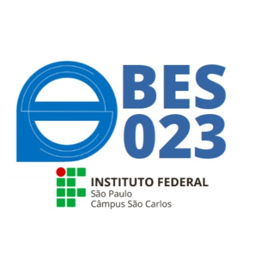

|

Bacharelado em Engenharia de SoftwareTodos os direitos sobre o texto reservados a IFSP - São Carlos - texto escrito pela propria instituição. O Bacharel em Engenharia de Software formado pelo IFSP São Carlos conhece, adapta e atua nas fases do processo de desenvolvimento de software, criando sistemas de alta qualidade de maneira sistemática, controlada, eficaz e eficiente. Desempenha atividades de análise, especificação, projeto e implementação de sistemas de software, interage com clientes, coordena equipes e gerencia projetos. Cria e documenta soluções, individualmente ou em equipe, para problemas complexos caracterizados por relações entre domínios de conhecimento e de aplicação. Planeja e coloca em prática atividades voltadas à garantia da qualidade tanto do produto quanto do processo de desenvolvimento de software. Identifica problemas e propõe soluções por meio do pensamento computacional a partir de sólida base em Ciência da Computação, Matemática e Produção, selecionando tecnologias apropriadas para cada situação. Conhece componentes de hardware e sistemas operacionais e sua relação com o desenvolvimento e o desempenho dos sistemas de software desenvolvidos. Compreende e utiliza infraestrutura tecnológica de rede a fim de projetar, implementar e implantar sistemas de software. Gerencia e atua em atividades de manutenção ao longo do ciclo de vida de sistemas de software. Reconhece a necessidade da contínua atualização e do aprimoramento de suas competências e habilidades, de forma a contribuir com o fortalecimento e o crescimento dos arranjos produtivos, sejam eles locais, regionais e/ou nacionais. Conhece aspectos éticos, econômicos, financeiros e legais de sua área de atuação, agindo como empreendedor de modo crítico, reflexivo e proativo para desenvolver e propor soluções informatizadas, com responsabilidade social e ambiental. É consciente e sensível às questões socioeconômicas que permeiam a sociedade, trabalhando de maneira solidária e ética, empregando suas habilidades técnicas na promoção de melhorias sustentáveis e do desenvolvimento tecnológico global. Texto escrito pelo site da IFSP - São Carlos, todos os direitos deste artigo reservado a eles. |